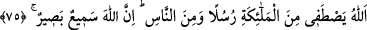
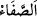
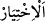
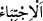
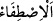

Kâşifî der ki: “Muhakkıklar şu görüştedir: Şirk ehli gerçek anlamıyla O’nu
tanımamışlardır. İlim ehli de O’nun marifetinin hakikatine yol bulamamışlardır. Çünkü
“Onlar ise, bilgice O’nu kavrayamazlar.” (Tâhâ, 20/110) düstûru, kimseyi Hakk’ın
dergâhının civarına bırakmaz. Kendisinin hüviyyet-i gaybet-i İlâhiyyesine hiçbir rehber
ve yol göstericiye yol vermez. O’nunla masiva arasında, kendisinin bilinmesi yoluna
adım atabilecek hiç bir münâsebet yoktur. Münâsebetsiz ma‘rifet, muhal kabîlindendir.
Toprağın pâk âlemle ne münâsebeti olabilir?
Büyüklerden birisi: “Seni sana göre gereği gibi tanıyamadık. Fakat seni kendimize
göre gereği gibi tanıdık.” demiştir.
Şeyhim ve senedim (k.s.)’un Miftâhu’l-ğayb şerhinde şöyle denilir: “Ehlüllah
meşrebinde ‘İlmü’l-hakâik’ diye isimlendirilen ilâhî-şer‘î ilim, beşerî tâkat nisbetinde
Hak ile halk arasındaki irtibat ve O’nun tarafından âlemin yaratılışı bakımından Hakk’ı
bilmektir. İşte burası kâmil velîlerin hayret vartasına düştükleri ve gereği gibi
ma‘rifetten/bilmekten âciz olduklarını îtiraf ettikleri yerdir.”
Şeyh Ebü’l-Abbâs (r.h.) der ki: “Velîyi tanımak Allah’ı tanımaktan daha zordur.
Çünkü Allah, kemâli ve cemâli ile tanınır. Ama insanın kendisi gibi yiyip içen bir
mahlûku nasıl tanıyabilir?!” Bu konuda en az bir zevki olan kimseye gizli değildir ki bu
söz, Miftâh şerhindeki ifâdelere ve ondan öncekilere uygundur.
75. Allah meleklerden de elçiler seçer, insanlardan da. Şüphesiz Allah işitendir,
görendir.
“Allah meleklerden de elçiler seçer, insanlardan da.” Cebrâîl, Mîkâîl ve İsrâfîl gibi
melekler, Allah ile peygamberler arasında vahiy ile aracılık ederler.
el-Müfredât’ta der ki: “
”nın asıl anlamı, bir şeyin ayıp ve kusurdan arınmış
olmasıdır. “
” bir şeyin en hayırlı olanını ve “
” üstün vasıflı olanlarını
seçmek olduğu gibi “
” ise bir şeyin en saf/temiz yerini seçmek ve almaktır.
Allah’ın kullarından birini seçmesi, bazen onu başkasında bulunan ayıp ve kusurdan
arınmış olarak yaratması ile olur. Bazen de eğer bu arılık o kimsede önceden yoksa
Allah’ın onu seçmesi ve buna hükmetmesi ile olur.
et-Te’vîlât’ta der ki: “Allah kendisi ile kulları arasında meleklerden elçiler seçer.
Bundan maksad ilâhî risâleti edâ etme konusunda onları terbiye etmektir. Çünkü kullar
henüz vâsıtasız olarak ilâhî hitâbı dinlemeye ehil değildirler. Onun için Allah kullarını
meleklerin elçiliği vâsıtasıyla terbiye eder.”
Allah “insanlardan da” elçiler seçer. Halkı kendisine dâvet etmesi için insanlar
arasından peygamberler seçer. Onlar, kendilerine temiz nefisler bahşedilen, kudsî güç
ile te’yid olunan, hem rûhânî hem de cismânî âlemin kelâmıyla ilgilendirilmiş olan, bir